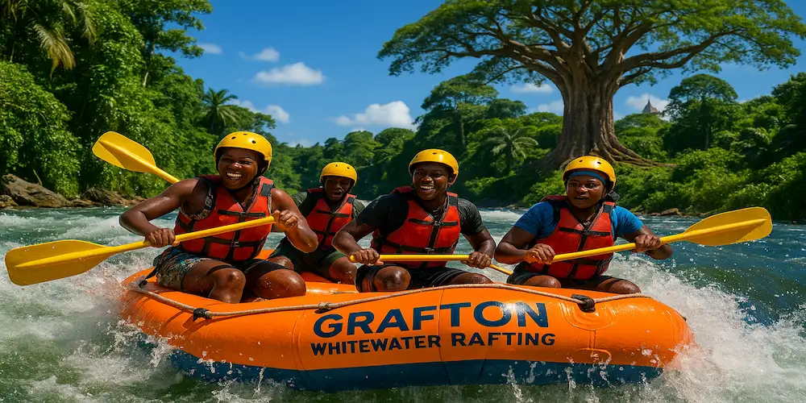
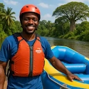
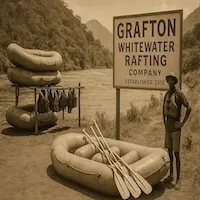

Our mission is to connect people with the beauty of Sierra Leone's rivers through safe, thrilling, and eco-conscious adventures. We believe in strong community, and respect for nature. Our creed: Adventure with integrity. Our motto: Paddle hard, live free, and feel the waves!.


Grafton Whitewater Rafting Company
History
Founded in 2024, the Grafton Whitewater Rafting Company emerged as Sierra Leone’s first dedicated whitewater adventure outfit, bringing the thrill of river exploration to the scenic Grafton region. Inspired by the natural beauty and untapped potential of local rivers, the company was established to promote eco-tourism, outdoor recreation, and sustainable economic growth. .
What began as a grassroots initiative by local outdoor enthusiasts has grown into a pioneering adventure tourism enterprise, offering guided rafting expeditions, safety training, and environmental education. The company continues to champion community involvement and environmental stewardship while showcasing the rich natural heritage of Sierra Leone's waterways.
